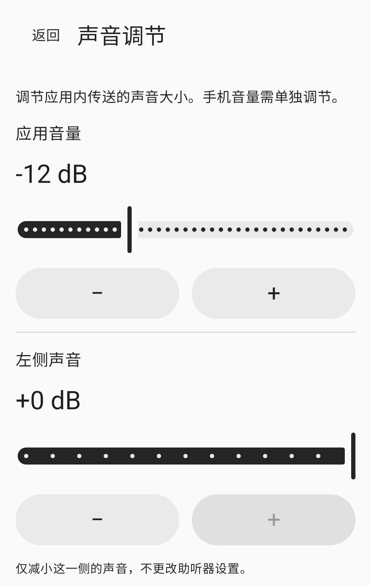

使用方法
连接、调节，然后开始。
连接
将耳机连接到这部手机，然后在应用中选择音频输出。默认使用有线或 USB 模式。使用 Bluetooth 时，请启用实验模式，再手动选择已连接的输出设备。
调节
调节应用音量、左右声道和音色。手机媒体音量需要单独设置。戴上耳机，并从较低音量开始准备。
开始
允许麦克风访问，查看会话须知，然后点击同意并开始按钮。仅授予权限不会启动麦克风。你可以从应用内或会话通知中停止。
声音调节
按需手动调节。
应用内的调节值与手机媒体音量是独立设置。
应用音量
在应用中调节传送到所选耳机的音量。同时请检查手机媒体音量。
左右声道
分别降低左右两侧的音量。这些调节不会更改耳机或助听器本身的设置。
音色
手动调节音色。应用不会根据听力测试结果自动补偿。
上图为实际声音调节界面的局部。右声道和音色调节未包含在截图中。
常见问题
开始使用之前
可以使用 Bluetooth 耳机吗？
Bluetooth 属于实验功能。请先将耳机连接到这部手机，启用实验模式，再手动选择输出设备。延迟和音质取决于手机和耳机。
重新连接耳机会自动重启会话吗？
不会。失去音频路由、音频焦点或麦克风权限后，会话会结束。重新连接耳机或重新打开应用都不会自动开始。准备好后，请手动重新开始。
耳机没有出现在列表中怎么办？
请检查这部手机的 Bluetooth 媒体音频连接，并刷新输出列表。更多说明请查看支持页面。
如何删除录音文件或应用数据？
应用不会创建麦克风录音文件。如需删除设备内的声音设置、权限请求记录或可选的最近一次试验记录，请查看本地数据指南。
使用前请确认。
适用于听力正常的 18 岁及以上成年人。HearAssist 是一款手动调节周围声音的工具，不用于补偿听力损失、替代助听器、测试听力、诊断或治疗疾病。
语音清晰度、实际延迟和声学安全性尚未得到验证。不保证完全消除噪声或实现零延迟。
应用尚未在应用商店公开发布。本网站提供产品信息和支持。